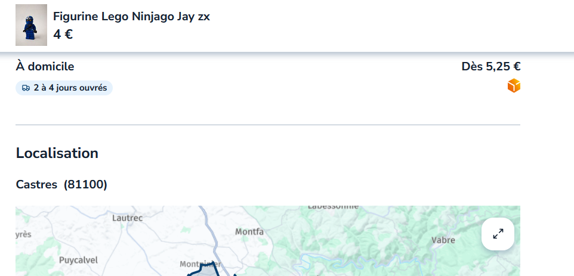
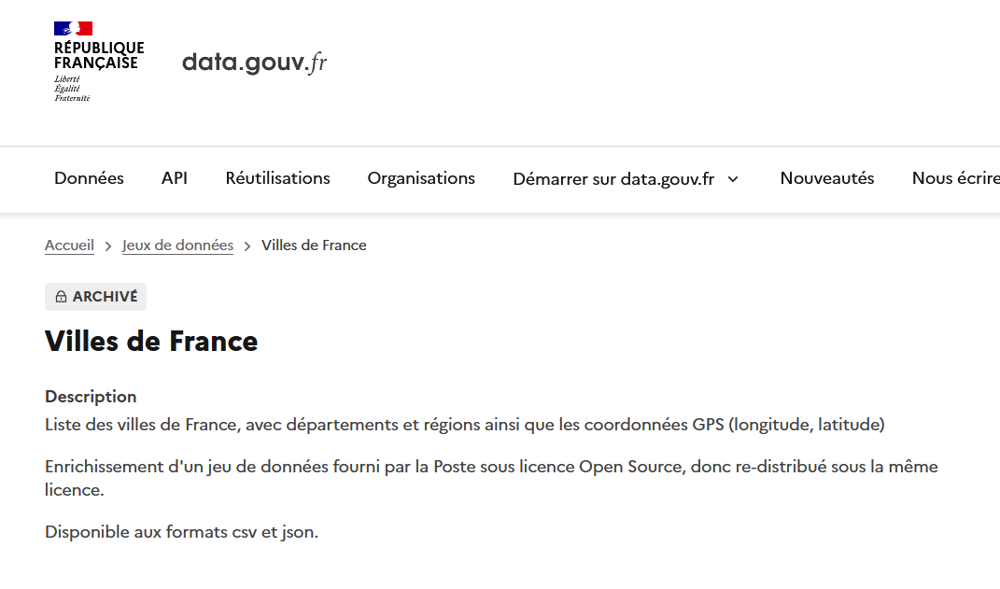
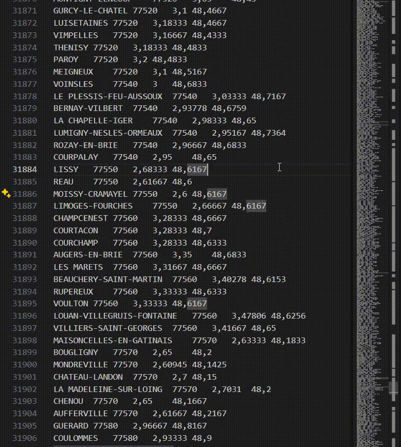
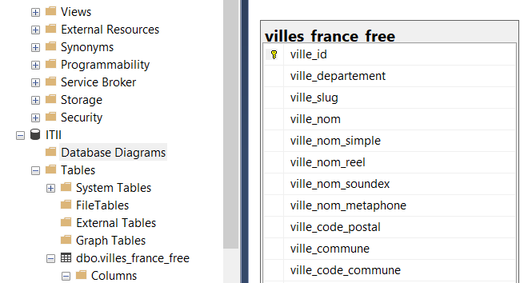
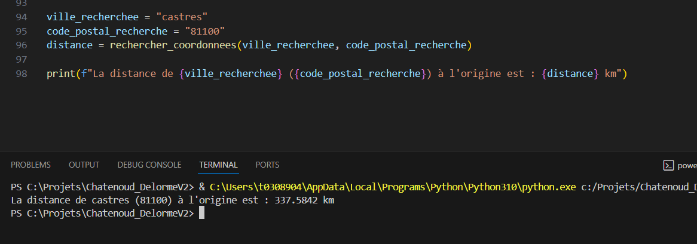
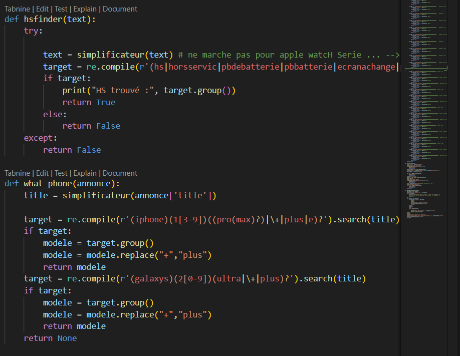
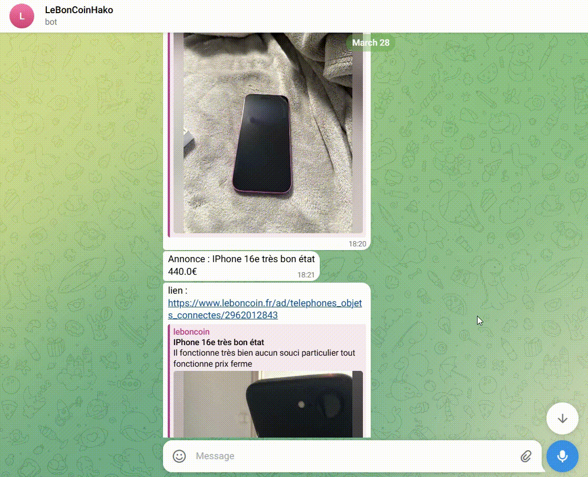

Système de Surveillance d'Annonces LeBonCoin
LeBonCoin est le site de petites annonces le plus connu en France, avec des milliers d'annonces publiées chaque jour.
Parmi ces annonces, certains prix sont très intéressants. Mais les lois du marché les font évidemment disparaître rapidement.
Si seulement nous avions un moyen d'automatiser la recherche de ces annonces et d'être prévenus dès leur publication, quasiment en temps réel.
Le but de ce projet était de créer un système automatisé capable de surveiller en permanence les nouvelles annonces
de smartphones et de me notifier uniquement des vraies bonnes affaires, en filtrant automatiquement les appareils défectueux.
Overview du Projet

Ce projet a duré plusieurs mois de développement, avec de nombreuses itérations pour optimiser les performances et la fiabilité. L'architecture finale combine plusieurs modules Python travaillant ensemble pour automatiser complètement la surveillance.
Détails Techniques
Je vais développer quelques aspects techniques intéressants de ce projet.
Récupération des communes et codes postaux

J'ai dû trouver un moyen de savoir à quelle distance se trouve chaque annonce. Pour cela, je récupère par scraping le nom de la commune et le code postal directement depuis la page de l'annonce LeBonCoin.
Au début, je voulais faire de la trigonométrie pour obtenir la distance directement par rapport à ma position, mais j'ai trouvé sur internet une API qui donne la distance en kilomètres à partir de coordonnées longitude/latitude.
Base de Données Géographique

J'ai donc pris une base de données .sql qui donne justement les coordonnées longitude/latitude de toutes les villes françaises. Cette base provient du site du gouvernement français en libre accès.
On va pouvoir exploiter ce fichier SQL pour extraire et traiter les données. Je l'ai ensuite transformée en fichier .txt pour pouvoir la traiter plus facilement avec mes scripts Python.


J'obtiens une super fonction !

Le résultat de tout ce travail est une fonction qui prend en paramètres le code postal et le nom de la ville, et qui retourne la distance en kilomètres de route par rapport à ma position. Cette fonction combine toutes les données récupérées (base gouvernementale, API de distance) pour fournir une information précise et exploitable.
Détection des Appareils Défectueux et Web Scraping

Le Web Scraping et les Expressions Régulières
Le web scraping consiste à extraire automatiquement des données depuis des pages web. Dans mon cas, je devais récupérer les informations des annonces LeBonCoin : titre, prix, description, localisation, etc.
Les expressions régulières (regex) sont essentielles pour ce projet. Elles permettent de :
- Détecter les mots-clés HS : patterns comme "HS", "cassé", "ne fonctionne plus", "écran fissuré", "pour pièces"
- Extraire les modèles : identifier précisément "iPhone 13", "Galaxy S24", etc. dans le titre
- Valider les prix : s'assurer que le format prix est cohérent (ex: "250€" ou "250 euros")
- Parser les descriptions : rechercher des informations complémentaires cachées dans le texte
Les regex me permettent de créer des patterns très précis pour éviter les faux positifs et garantir une détection fiable des critères de filtrage.
Interface Utilisateur Conviviale

J'ai aussi ajouté des commandes Telegram pour rendre le système plus user-friendly. Plutôt que de devoir modifier le code à chaque fois, je peux maintenant :
- Modifier les prix seuils directement via Telegram
- Consulter les statistiques en temps réel
- Redémarrer ou arrêter la surveillance à distance
- Recevoir des rapports de fonctionnement
Résultat Final
Le système fonctionne parfaitement ! Il surveille automatiquement LeBonCoin 24h/24, analyse les nouvelles annonces et me notifie uniquement des vraies bonnes affaires. Fini les heures passées à faire défiler manuellement les annonces !
L'architecture modulaire permet d'ajouter facilement de nouveaux critères ou d'adapter le système à d'autres sites. Ce projet m'a permis d'automatiser complètement une tâche chronophage tout en développant mes compétences en Python et web scraping.
Démonstration

Voici le système en fonctionnement : dès qu'une bonne affaire est détectée,
je reçois instantanément une notification Telegram avec tous les détails
(prix, modèle, distance, lien direct). Simple et efficace !
Je posterais les resultats d'achat et le retour sur la rentabilité quand j'aurais un peu plus de datas.